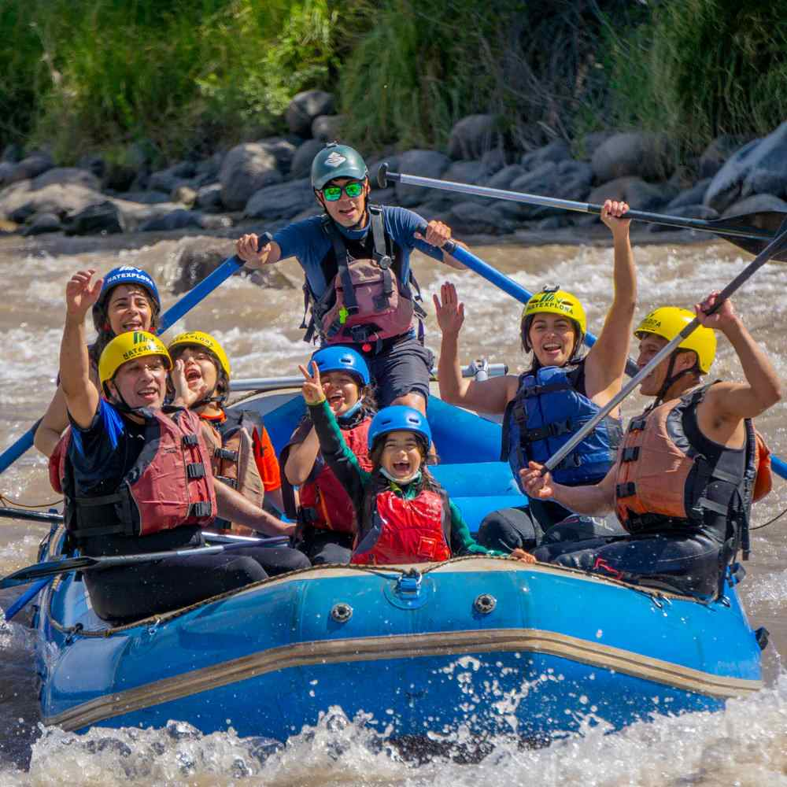

At RiverPulse Adventures, we create unforgettable rafting experiences that connect people with nature. Our mission is to provide thrilling, safe adventures that foster teamwork and personal growth. Guided by our motto, "Ride the Rapids, Live the Adventure," we believe every trip is a journey of transformation and exploration.

RiverPulse Adventures
History
RiverPulse Adventures was founded in 2012 by lifelong friends Max and Lucas, who grew up rafting the rivers of Patagonia. Their passion for adventure and nature led them to create a company focused on offering thrilling, safe rafting experiences. Starting with just one raft and a dream, RiverPulse quickly became known for its authentic, fun-filled tours. Today, the company continues to thrive, staying true to its roots of sharing the excitement of the river while fostering a deep respect for nature.
Over the years, RiverPulse Adventures has expanded its offerings, introducing multi-day expeditions and eco-conscious travel options. Max and Lucas have remained hands-on, ensuring that every guest experiences the same sense of wonder and adventure that first inspired them. Their commitment to sustainability and local conservation efforts has earned the company a reputation not only for its thrilling adventures but also for its dedication to protecting the pristine beauty of Patagonia's rivers and landscapes for future generations.
Adventure Awaits You!